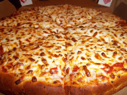

To Learn More Go Here| Ingrediants | Directions | ||||||||||||||||||||||||||||||||||||||||||||||||||||||||||||||||||||||||||
|---|---|---|---|---|---|---|---|---|---|---|---|---|---|---|---|---|---|---|---|---|---|---|---|---|---|---|---|---|---|---|---|---|---|---|---|---|---|---|---|---|---|---|---|---|---|---|---|---|---|---|---|---|---|---|---|---|---|---|---|---|---|---|---|---|---|---|---|---|---|---|---|---|---|---|---|
| 1 1/2 cups warm water | (105°F-115°F) | ||||||||||||||||||||||||||||||||||||||||||||||||||||||||||||||||||||||||||
| 1 package (2 1/4 teaspoons) of active dry yeast | Proof the yeast | ||||||||||||||||||||||||||||||||||||||||||||||||||||||||||||||||||||||||||
| 3 1/2 cups bread flour | Make and knead the pizza dough | ||||||||||||||||||||||||||||||||||||||||||||||||||||||||||||||||||||||||||
| 2 Tbsp olive oil | Put dough in warm place to rise | ||||||||||||||||||||||||||||||||||||||||||||||||||||||||||||||||||||||||||
| 2 teaspoons salt | Preheat pizza stone | ||||||||||||||||||||||||||||||||||||||||||||||||||||||||||||||||||||||||||
| 1 teaspoon sugar | Punch down dough, divide into two balls | ||||||||||||||||||||||||||||||||||||||||||||||||||||||||||||||||||||||||||
| Olive oil | Flatten dough ball, and stretch out into a round | ||||||||||||||||||||||||||||||||||||||||||||||||||||||||||||||||||||||||||
| Cornmeal (to help slide the pizza onto the pizza stone) | Brush dough top with olive oil | ||||||||||||||||||||||||||||||||||||||||||||||||||||||||||||||||||||||||||
| Tomato sauce | Sprinkle pizza peel with corn meal, put flattened dough on top | ||||||||||||||||||||||||||||||||||||||||||||||||||||||||||||||||||||||||||
| Mozzarella cheese, grated | Spread with tomato sauce and sprinkle with toppings | ||||||||||||||||||||||||||||||||||||||||||||||||||||||||||||||||||||||||||
| Parmesan cheese, grated | Sprinkle cornmeal on pizza stone, slide pizza onto pizza stone in oven | ||||||||||||||||||||||||||||||||||||||||||||||||||||||||||||||||||||||||||
| Feta cheese, crumbled | Bake pizza | ||||||||||||||||||||||||||||||||||||||||||||||||||||||||||||||||||||||||||
| Ingrediants | Directions | ||||||||||||||||||||||||||||||||||||||||||||||||||||||
|---|---|---|---|---|---|---|---|---|---|---|---|---|---|---|---|---|---|---|---|---|---|---|---|---|---|---|---|---|---|---|---|---|---|---|---|---|---|---|---|---|---|---|---|---|---|---|---|---|---|---|---|---|---|---|---|
| 1 pound spaghetti | Preheat oven to 425 degrees F. | ||||||||||||||||||||||||||||||||||||||||||||||||||||||
| Salt, for pasta water | Place a large pot of water on to boil for spaghetti. When it boils, add salt and pasta | ||||||||||||||||||||||||||||||||||||||||||||||||||||||
| 1 1/4 pounds ground sirloin | Roll meat into 1 1/2 inch medium-sized meatballs and place on nonstick cookie sheet or a cookie sheet greased with extra-virgin olive oil | ||||||||||||||||||||||||||||||||||||||||||||||||||||||
| 2 teaspoons Worcestershire sauce | Bake balls 10 to 12 minutes, until no longer pink | ||||||||||||||||||||||||||||||||||||||||||||||||||||||
| 1 egg, beaten | Toss hot, drained pasta with a few ladles of the sauce and grated cheese | ||||||||||||||||||||||||||||||||||||||||||||||||||||||
| 1/2 cup Italian bread crumbs | Turn meatballs in remaining sauce | ||||||||||||||||||||||||||||||||||||||||||||||||||||||
| 1/4 cup grated Parmesan | Place pasta on dinner plates and top with meatballs and sauce and extra grated cheese | ||||||||||||||||||||||||||||||||||||||||||||||||||||||
| 2 cloves garlic, chopped | |||||||||||||||||||||||||||||||||||||||||||||||||||||||
| Salt and Pepper | |||||||||||||||||||||||||||||||||||||||||||||||||||||||
| Ingrediants | Directions | ||||||||||||||||||||||||||||||||||||
|---|---|---|---|---|---|---|---|---|---|---|---|---|---|---|---|---|---|---|---|---|---|---|---|---|---|---|---|---|---|---|---|---|---|---|---|---|---|
| 2 3/4 cups all-purpose flour | Preheat oven to 375 degrees F (190 degrees C) | ||||||||||||||||||||||||||||||||||||
| 1 teaspoon baking soda | In a small bowl, stir together flour, baking soda, and baking powder | ||||||||||||||||||||||||||||||||||||
| 1/2 teaspoon baking powder | In a large bowl, cream together the butter and sugar until smooth | ||||||||||||||||||||||||||||||||||||
| 1 cup butter, softened | Beat in egg and vanilla | ||||||||||||||||||||||||||||||||||||
| 1 1/2 cups white sugar | Gradually blend in the dry ingredients | ||||||||||||||||||||||||||||||||||||
| 1 egg | Roll rounded teaspoonfuls of dough into balls, and place onto ungreased cookie sheets | ||||||||||||||||||||||||||||||||||||
| 1 teaspoon vanilla extract | Bake 8 to 10 minutes in the preheated oven, or until golden | ||||||||||||||||||||||||||||||||||||
| Let stand on cookie sheet two minutes before removing to cool on wire racks | |||||||||||||||||||||||||||||||||||||
| Ingrediants | Directions | ||||||||||||||||||
|---|---|---|---|---|---|---|---|---|---|---|---|---|---|---|---|---|---|---|---|
| 1⁄2 cup vegetable oil | Preheat oven to 350° | ||||||||||||||||||
| 1 cup sugar | Mix oil and sugar until well blended | ||||||||||||||||||
| 1 teaspoon vanilla | Add eggs and vanilla; stir just until blended | ||||||||||||||||||
| 2 large eggs | Mix all dry ingredients in a separate bowl | ||||||||||||||||||
| 1⁄4 teaspoon baking powder | Stir dry ingredients into the oil/sugar mixture | ||||||||||||||||||
| 1⁄3 cup cocoa powder | Pour into greased 9 x 9 square pan | ||||||||||||||||||
| 1⁄4 teaspoon salt | Bake for 20 minutes or until sides just start to pull away from the pan | ||||||||||||||||||
| 1⁄2 cup flour | Cool completely before cutting | ||||||||||||||||||
| Ingrediants | Directions |
|---|---|
| 8 ounces uncooked elbow macaroni | Cook macaroni according to the package directions. Drain. |
| 2 cups shredded sharp Cheddar cheese | In a saucepan, melt butter or margarine over medium heat |
| 1/2 cup grated Parmesan cheese | Stir in enough flour to make a roux |
| 3 cups milk | Add milk to roux slowly, stirring constantly |
| 1/4 cup butter | tir in cheeses, and cook over low heat until cheese is melted and the sauce is a little thick |
| 2 1/2 tablespoons all-purpose flour | Put macaroni in large casserole dish, and pour sauce over macaroni. Stir well |
| 2 tablespoons butter | Melt butter or margarine in a skillet over medium heat |
| 1/2 cup bread crumbs | Spread over the macaroni and cheese to cover |
| 1 pinch paprika | Bake at 350 degrees F (175 degrees C) for 30 minutes |